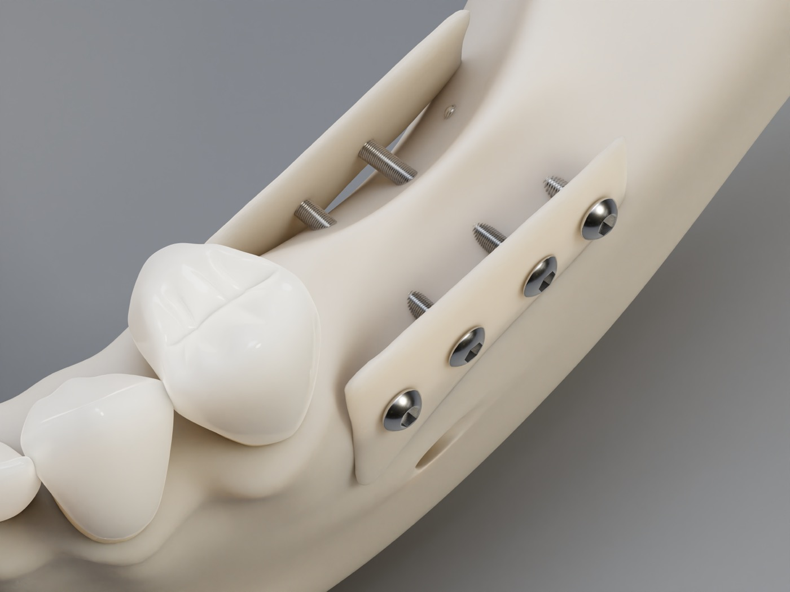
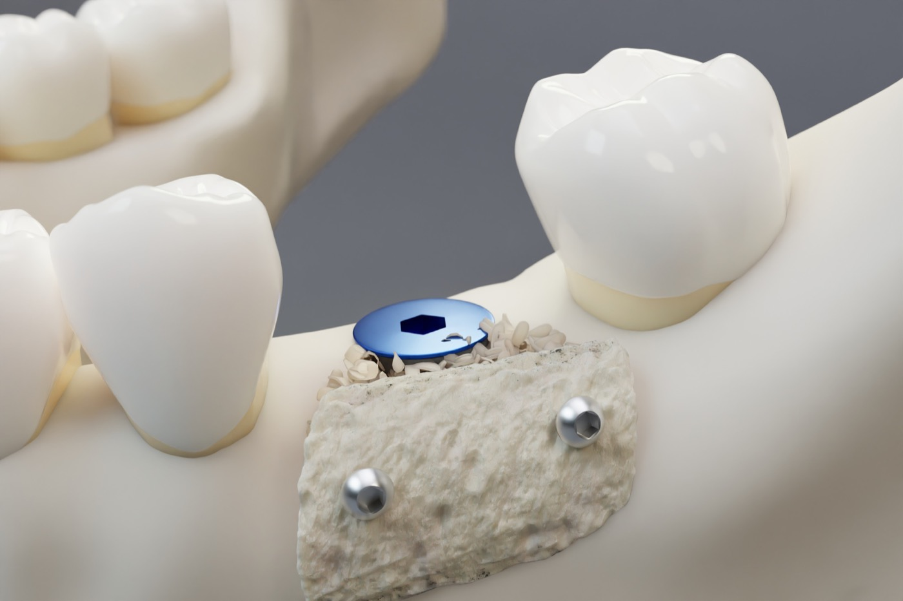
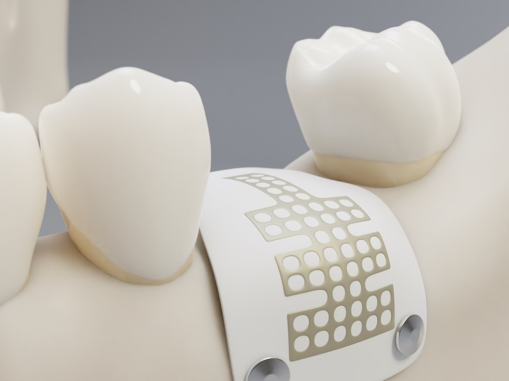

Diese Information betrifft einen größeren Knochenaufbau vor einer Implantation. Bei einem vertikalen Knochendefekt fehlt Knochenhöhe. In bestimmten Defektgeometrien ist eine gleichzeitige Implantation nicht sinnvoll, weil der Körper zuerst einen stabilen, durchbluteten Knochenaufbau bilden muss.
Warum wird zuerst Knochen aufgebaut?
Ein Implantat muss später dort stehen, wo die Krone prothetisch sinnvoll ist. Wenn der Kieferkamm in der Höhe deutlich reduziert ist, fehlt dafür das tragfähige Knochenlager. Ein Implantat gleichzeitig mit dem vertikalen Aufbau zu setzen, wäre in solchen Situationen biologisch und mechanisch zu wenig vorhersagbar.
Neue Knochenbildung braucht Stabilität, geschützten Raum und Gefäßneubildung. Neue Blutgefäße müssen in den Aufbau einwachsen, damit aus Knochenmaterial belastbarer eigener Knochen wird. Ein Implantat im Defektbereich kann diesen Regenerationsraum und die Blutgefäßbildung behindern. Deshalb planen wir den Eingriff in solchen Fällen bewusst zweizeitig: zuerst Knochenaufbau, später Implantation.
Die wichtigste Entscheidung
Das zweizeitige Vorgehen ist kein Rückschritt. Es ist bei bestimmten vertikalen Defekten der planbarere Weg: erst Knochen regenerieren lassen, dann das Implantat in den stabilen Knochen und in die korrekte Position setzen.
Welche Methoden kommen infrage?
Standard
Schalentechnik nach Khoury
Dünne eigene Knochenschalen werden meist aus dem Kieferwinkelbereich gewonnen, am Defekt mit kleinen Schrauben fixiert und als stabile biologische Wand genutzt. Der Zwischenraum wird mit Knochenspänen, häufig ergänzt durch PRF aus eigenem Blut, aufgefüllt.
Eigenknochen ist biologisch der Referenzstandard.
Der Kieferwinkel ist intraoral erreichbar und liefert geeigneten kortikalen Knochen.
Schrauben werden später beim Reentry bzw. bei der Implantation entfernt.
Alternative
Allogene Cortical Plate
In geeigneten Fällen kann statt einer körpereigenen Schale eine aufbereitete Spenderknochenplatte eingesetzt werden, zum Beispiel ein Cortical-Plate-System wie maxgraft cortico bzw. vergleichbare Systeme.
Keine zusätzliche Knochenentnahmestelle im Kieferwinkel.
Kann bei Blutungsrisiko, begrenzter Eigenknochenmenge oder großem Volumenbedarf sinnvoll sein.
Bleibt ein anspruchsvoller Aufbau: Fixierung, Wundverschluss und Kontrollen sind entscheidend.
Wichtig zur Materialbezeichnung: Eine Cortical Plate wie maxgraft cortico ist kein rein synthetisches Material, sondern aufbereiteter humaner Spenderknochen. Synthetische bzw. metallische Raumhalter wie Titanmesh oder titanverstärkte Membranen sind andere Verfahren und werden nach Defektform separat abgewogen.
Aufbauprinzipien im Bild

Khoury-Schalentechnik: Fixierte Knochenschalen schaffen den Regenerationsraum.

Semilunare Schale: gebogene Knochenschale als Variante zur Formgebung.

Membran/GBR: andere Raumstabilisierung je nach Defektgeometrie.
Typischer Ablauf
1Planung
DVT und klinische Untersuchung: Knochenhöhe, Breite, Nachbarstrukturen, Weichgewebe und spätere Implantatposition werden geplant.
2Aufbau
Vertikale Augmentation: Knochenschale oder Cortical Plate wird fixiert, der Raum wird aufgefüllt, das Weichgewebe wird spannungsfrei verschlossen.
4-6Monate
Einheilphase: Der Körper bildet neuen Knochen. Bei größeren Defekten kann die Einheilzeit länger sein und wird individuell festgelegt.
3Reentry
Implantation: Der Aufbau wird kontrolliert, Fixierschrauben werden entfernt und das Implantat wird gesetzt, wenn der Knochen stabil genug ist.
4Krone
Prothetische Versorgung: Nach Implantateinheilung erfolgen Freilegung und später die Krone durch den Hauszahnarzt.
Biologisch sehr hochwertig; eigener Knochen liefert Zellen, Wachstumsreize und stabiles Gerüst.
Zweites Operationsgebiet am Kieferwinkel; möglich sind Nachblutung, Schwellung, Beschwerden und vorübergehende Sensibilitätsstörung.
Allogene Cortical Plate
Keine Knochenentnahme am Kieferwinkel; kann Entnahmemorbidität, OP-Zeit und Entnahmeschmerz reduzieren.
Aufbereiteter Spenderknochen; Eigenknochen bleibt Referenzstandard. Platte kann freiliegen, brechen, sich lockern oder nicht vollständig integrieren.
GBR / Membran / Raumhalter
Raumstabilität ohne Knochenschale; je nach Defekt mit Knochenersatzmaterial kombinierbar.
Membranexposition, Wundöffnung und unzureichender Knochengewinn möglich; nicht jede Defektform ist geeignet.
Alternative Versorgung
Brücke, Prothese, kürzeres Implantat oder Verzicht auf großen Aufbau kann in Einzelfällen sinnvoller sein.
Abwägung von Aufwand, Prognose, Kosten, Funktion und persönlichem Wunsch.
Risiken und mögliche Komplikationen
Risiko / Komplikation
Häufigkeit
Was bedeutet das?
Schwellung, Bluterguss, Schmerzen
Häufig
Normale Reaktion nach größeren Augmentationen; Höhepunkt meist an Tag 2-3, anschließend Rückgang.
Nachblutung
Selten bis gelegentlich
Besonders relevant bei Blutverdünnung oder zusätzlicher Entnahmestelle. Medikamentenplan muss vorher besprochen werden.
Wundheilungsstörung / Nahtdehiszenz
Gelegentlich
Bei vertikalen Aufbauten entscheidend: wenn die Naht aufgeht, können Platte, Membran oder Knochenmaterial sichtbar werden.
Infektion / Materialexposition
Selten bis gelegentlich
Engmaschige Kontrollen, Antibiotika, Spülungen oder operative Revision können nötig werden.
Teilweiser Volumenverlust
Möglich
Knochen wird immer umgebaut. Bei relevantem Verlust kann ein zusätzlicher Aufbau oder eine geänderte Implantatplanung nötig sein.
Aufbau reicht nicht aus
Selten
Das Implantat kann dann nicht wie geplant gesetzt werden oder die Behandlung verlängert sich.
Nervreizung bei Kieferwinkelentnahme
Selten; meist vorübergehend
Kribbeln oder Taubheitsgefühl an Lippe/Kinn. Bleibende Sensibilitätsstörungen sind sehr selten, werden aber aufgeklärt.
Plattenbruch / Schraubenlockerung
Selten
Kann einen zusätzlichen Eingriff oder eine Anpassung des Aufbaus erforderlich machen.
Risikofaktoren bitte vollständig angeben: Blutverdünner, ASS, Marcumar, DOAK, Bisphosphonate/Denosumab, Diabetes, Immunsuppression, Kortison, Chemo- oder Strahlentherapie, Rauchen, Parodontitis, bekannte Wundheilungsprobleme. Rauchen und schlechte Mundhygiene erhöhen das Risiko für Wundöffnung und Aufbauverlust deutlich.
Betäubung & Sedierung - Ihre Optionen
Methode
Beschreibung
Kosten
Lokalanästhesie (Standard)
Wach, kein Schmerz - nur Druck. Bei Schmerzwahrnehmung wird sofort nachbetäubt. ÖPNV nach Hause erlaubt.
Kassenleistung (GKV) bzw. im Behandlungspaket inkl.
Orale Sedierung (Tavor) (Komfort)
Tablette ca. 60 Min. vorher. Kein Schlaf, deutliche Stressreduktion. Vitalparameter werden überwacht. Begleitperson notwendig, 24 Std. nicht verkehrsfähig. Abholung aus der Praxis verpflichtend.
ca. 80 EUR Eigenleistung
Dämmerschlaf (i.v.) (Komfort)
Professionelles Narkoseteam, medikamentös an der Schlaf-Wachgrenze, kooperativ, meist keine Erinnerung. Postop. Aufwachraum mit Vitalüberwachung. Nur dienstags. Nüchtern ab 22 Uhr nichts essen, ab 6 Uhr nichts trinken. Abholung aus der Praxis verpflichtend.
ca. 230 EUR Eigenleistung
Vollnarkose (Komfort)
Echter Tiefschlaf, Beatmung über die Nase in die Lunge, keine Wahrnehmung des Eingriffs. Postop. Aufwachraum mit Vitalüberwachung. Nur dienstags. Nüchtern wie Dämmerschlaf. Abholung aus der Praxis verpflichtend.
ca. 450 EUR Eigenleistung
Standard ist die Lokalanästhesie - für die allermeisten Patienten vollkommen ausreichend. Sedierung ist eine optionale Komfortzubuchung als Eigenleistung. Bei keiner Methode spüren Sie Schmerzen - die Betäubung wirkt vollständig, bevor wir beginnen.
Blutverdünner nie eigenständig absetzen - immer nach ärztlicher Absprache.
Vorhandene Röntgenbilder/DVT und Überweisung mitbringen.
Nikotin möglichst konsequent pausieren.
Provisorium mit Hauszahnarzt abstimmen, damit kein Druck auf den Aufbau entsteht.
Nach dem Eingriff
OP-Tag: Ruhe, Oberkörper hoch, keine körperliche Belastung.
Nicht an der Wunde ziehen, nicht kräftig spülen, nicht rauchen.
Weiche Kost, keine harten Krusten/Körner im Operationsgebiet.
Provisorium nur so tragen, wie besprochen - kein Druck auf den Aufbau.
Kontrolltermine unbedingt wahrnehmen.
Häufige Fragen
Warum kann das Implantat nicht sofort gesetzt werden?
Bei ausgeprägten vertikalen Defekten würde das Implantat die Regeneration behindern und häufig nicht in der idealen Position stehen. Zuerst muss Knochen entstehen, der später belastbar ist.
Ist Eigenknochen immer besser?
Eigenknochen ist biologisch der Referenzstandard. In geeigneten Fällen kann eine allogene Cortical Plate aber die Entnahmestelle vermeiden und trotzdem einen stabilen Regenerationsraum schaffen.
Ist Spenderknochen sicher?
Spenderknochen wird industriell aufbereitet und geprüft. Ein Nullrisiko kann medizinisch nie versprochen werden. Wichtig sind die Indikation, sterile Anwendung, stabile Fixierung und engmaschige Kontrolle.
Was passiert mit den Schrauben?
Fixierschrauben bleiben nur während der Einheilung im Knochen. Sie werden beim Reentry bzw. bei der Implantation planmäßig entfernt.
Kann der Aufbau teilweise zurückgehen?
Ja. Knochen wird immer umgebaut. Die Planung berücksichtigt dies durch Überaugmentation. Bei relevantem Volumenverlust kann ein Zusatzaufbau nötig werden.
Was bedeutet Blutverdünnung für die Planung?
Die Blutverdünnung wird individuell geplant und nicht eigenständig abgesetzt. Eine allogene Platte kann eine zusätzliche Entnahmewunde vermeiden, der Haupteingriff bleibt aber blutungsrelevant.
Wie lange dauert die Gesamtbehandlung?
Der Aufbau braucht meist mehrere Monate Einheilzeit. Danach folgen Implantation, Implantateinheilung, Freilegung und Krone. Insgesamt ist häufig mit einer längeren Behandlungsdauer als beim einfachen Implantat zu rechnen.
Gibt es Alternativen?
Je nach Situation können Brücke, Prothese, kürzeres Implantat, Positionsanpassung oder Verzicht auf den großen Aufbau sinnvoller sein. Das wird individuell abgewogen.
Wann müssen Sie sich melden?
Sofort Kontakt aufnehmen bei ...
Starke Nachblutung - 30 Minuten Druck auf Tupfer hilft nicht
Zunehmende Schwellung nach dem 3. Tag oder Fieber über 38,5 °C
Eiter, übler Geschmack, deutlich zunehmende Schmerzen
Naht öffnet sich oder Platte, Membran oder Knochenmaterial wird sichtbar
Taubheitsgefühl/Kribbeln an Lippe oder Kinn nimmt zu
Provisorium drückt auf die Wunde oder den Aufbau
Außerhalb der Praxissprechzeiten stehen wir für Notfälle unter der Telefonnummer +49 151 10437450 zur Verfügung. Wenn wir nicht erreichbar sind: zahnärztlicher Notdienst 01805 60 70 11. Bei lebensbedrohlicher Notlage, Atemnot, starker Schluckbehinderung oder rascher Schwellung von Mundboden, Hals oder Zunge: 112.
MKG im Carree Dr. Julia Malik & Dr. Christoph Malik · Darmstadt